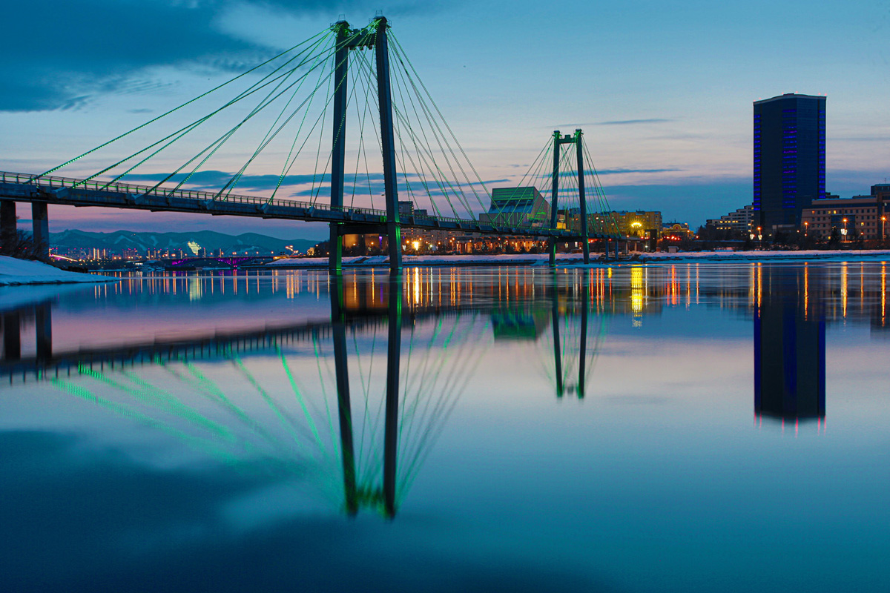

На главную
Практическое задание №1
Мой город Красноярск

Красноярск — один из крупнейших городов России, крупнейший экономический, образовательный и культурный центр Восточной Сибири.
Факты
- Основан в 1628 году, является крупнейшим из старинных городов Сибири.
- Расположен на обоих берегах Енисея на стыке Западно-Сибирской равнины, Среднесибирского плоскогорья и Саянских гор.
- Население города на 2024 год — 1 205 473 человека, седьмой по численности населения город России.
Достопримечательности
- Часовня Параскевы Пятницы — Покровка
- Национальный парк «Красноярские Столбы»
- Смотровая площадка на Николаевской сопке
- Остров Татышев — крупнейший остров в Красноярске
- Коммунальный мост
Автор статьи